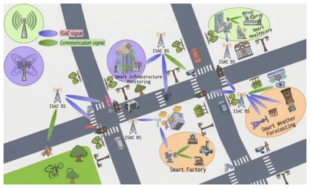
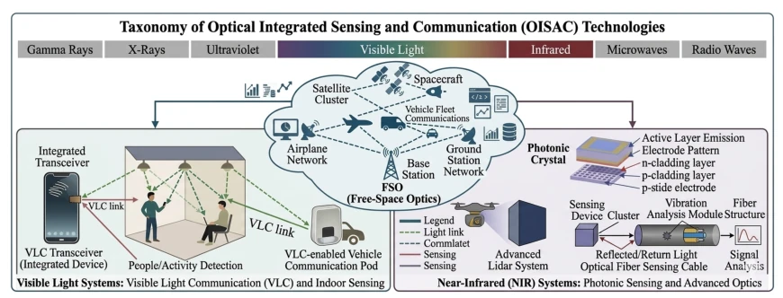
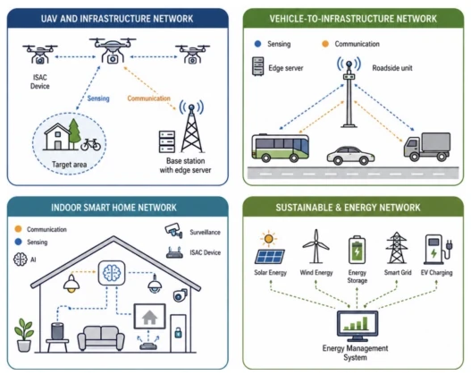
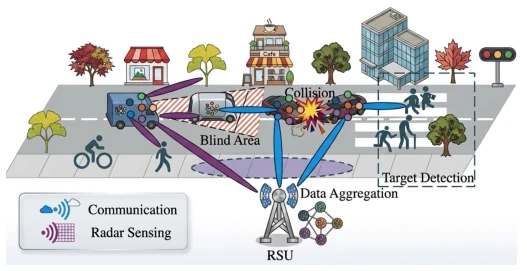
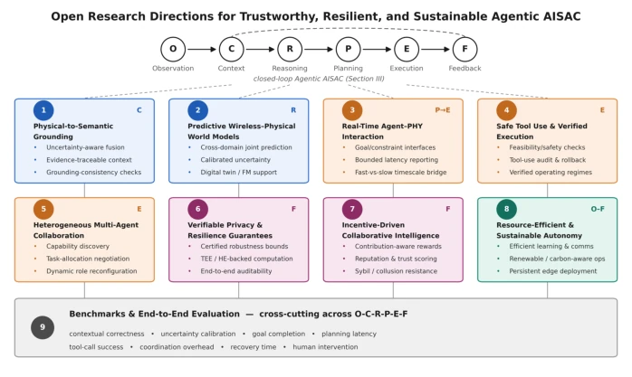
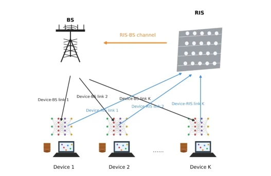
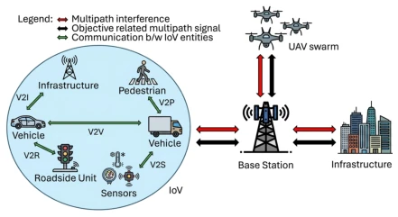
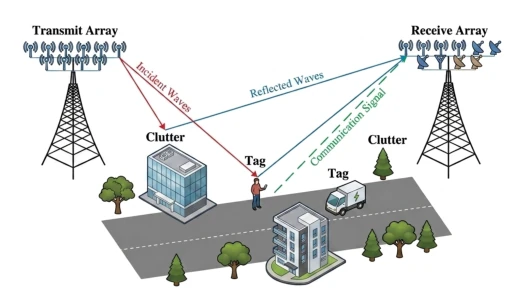
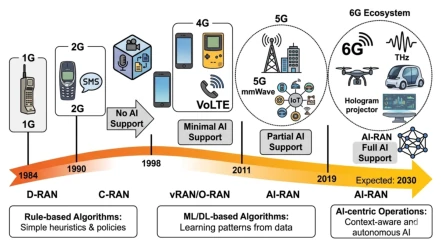

This review forcibly marries ISAC and Agentic AI, creating the AISAC concept. The framework is drawn beautifully, the six-stage closed loop sounds human-like, but audit results contradict: existing research mostly "pretends" to be intelligent, true closed loops are few. The author sharply points out that the Agentic label is applied faster than 5G, but L3-L4 level systems are basically pie in the sky. The benefit is organizing fragmented literature, the downside is potentially exacerbating the bubble of "Agentic for Agentic's sake." For communication researchers, this paper is a map; for embodied AI researchers, this is cross-border reference, but do not expect to directly use it to control robotic arms. It reveals the current AI-enabled wireless field's "Emperor's New Clothes" phenomenon, i.e., claiming intelligence but lacking closed-loop verification, serving as a bucket of cold water for blind followers.
研究动机Motivation
现有ISAC研究多聚焦物理层联合优化 [10][11]，缺乏目标驱动的智能闭环。Agentic AI 虽能实现自主决策，但直接引入ISAC会放大攻击面，如感知-计算关联导致的隐私泄露。现有工作将安全视为孤立问题 [10]，未考虑跨域耦合威胁。此外，文献缺乏统一框架判断系统是否真“具身”或“具网”，导致宣称与能力脱节。本文旨在填补这一空白，建立隐私与韧性并重的AISAC基础。现有综述未涵盖Agentic AI与ISAC的深度融合，且对安全挑战的讨论往往碎片化 [12]，无法指导实际系统构建，亟需统一视角。
Existing ISAC research mostly focuses on physical layer joint optimization [10][11], lacking goal-driven intelligent closed loops. Although Agentic AI can achieve autonomous decision-making, directly introducing it into ISAC would amplify the attack surface, such as privacy leakage caused by sensing-computation correlation. Existing work treats security as an isolated problem [10], not considering cross-domain coupling threats. Furthermore, literature lacks a unified framework to judge whether a system is truly "embodied" or "networked", leading to a disconnect between claims and capabilities. This paper aims to fill this gap and establish an AISAC foundation that emphasizes both privacy and resilience. Existing reviews do not cover the deep fusion of Agentic AI and ISAC, and discussions on security challenges are often fragmented [12], unable to guide actual system construction, urgently needing a unified perspective.

Fig. 1. Learning-driven ISAC frameworks can be applied to different tasks, such as joint waveform and beamforming design, environment-aware sensing, resource allocation, target detection and tracking, and cross-layer optimization [11].

Fig. 2. Evolution of ISAC from radar-communication coexistence toward fully integrated AI-driven 6G architectures, where milestones include dual-functional waveforms, sensing-assisted communications, communication-assisted sensing, and unified ISAC [13].
Proposes a six-stage closed-loop framework: Observe, Context, Reason, Plan, Execute, Feedback. Defines five maturity levels (L0-L4), from physical primitives to full closed loop. Architecture layered: fast physical control, medium scheduling, slow cognition. Agent roles are toolized, not directly solving the underlying layer, but calling tools like beamformers, RIS optimizers, etc. Abstracts data flow via Formula (1), distinguishing physical observation from semantic context. Emphasizes multi-agent collaboration and federated learning for resource orchestration under privacy protection. Proposes a layered architecture, distinguishing Mission Agent and ISAC Orchestrator, avoiding compute-intensive models controlling every symbol. Tool interface design allows existing optimizers to be called by Agent, rather than rewritten. This design balances intelligence and real-time performance, but implementation difficulty is extremely high.

Fig. 3. AISAC as a closed-loop intelligence fabric, leverages agentic AI techniques, including deep learning for sensing interpretation, reinforcement learning for resource scheduling, federated and distributed learning for privacy preservation, and multi-agent learning for cooperative perception and control [17].

Fig. 4. Application of AISAC in vehicular network [50].
No traditional experiments, adopts literature audit method. Selects representative studies, compares against 9 Agentic evaluation standards (e.g., context correctness, tool call success rate). Results show that no system reports exceeding 1-2 standards, exposing the maturity gap between claims and demonstrations. Finds L0-L2 level research clustered, L3-L4 level extremely rare. Points out challenges such as physical-to-semantic implementation, real-time interaction, etc., providing direction for future benchmarks. Audit covers cross-domain needs such as privacy, security, resilience, revealing the lack of closed-loop verification in existing systems. This audit process itself constitutes the core contribution of the paper, proving that the current field is in the "infancy".

Fig. 9. Research directions for advancing privacy-preserving and resilient solutions in future AISAC systems.
其他图片Other Figures

Fig. 5. An Illustration of the considered wireless FL in an RIS-assisted NOMA System [66].

Fig. 6. Overview of AISAC-enabled Low Altitude Network [71].

Fig. 7. Backscatter communication enables AISAC under stringent device power constraints [88].

Fig. 8. Evolution of mobile networks and RAN architectures from the perspective of AI adoption [106].